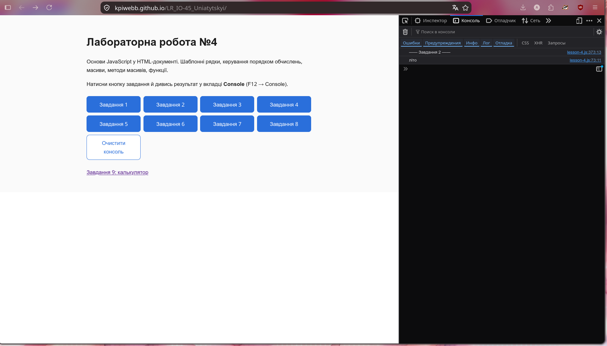
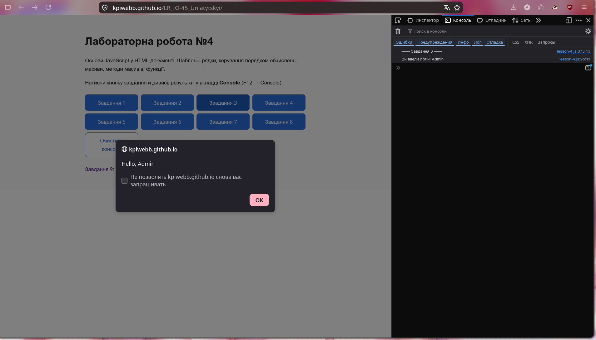
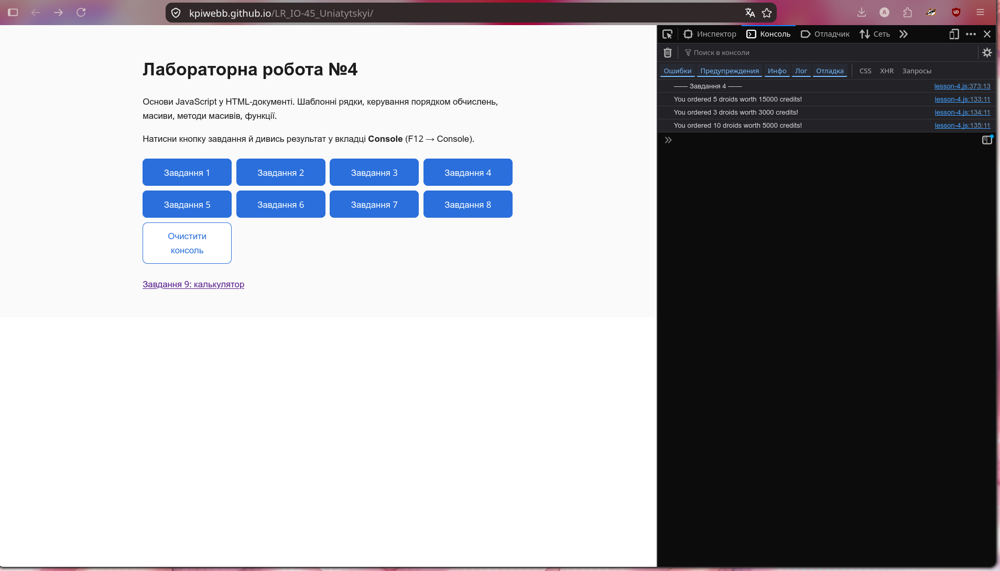
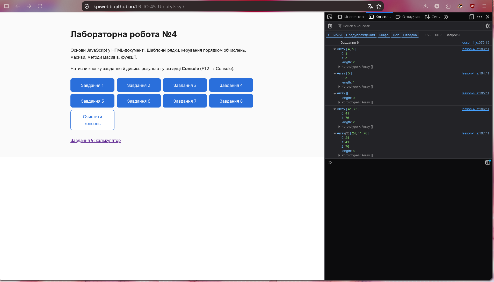
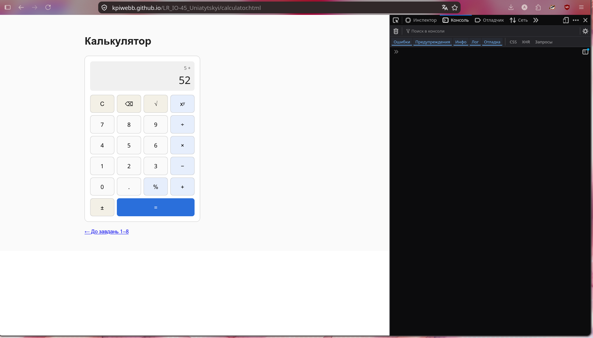
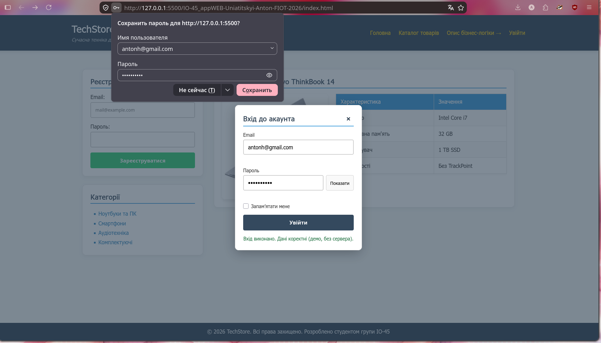

Звіт з Лабораторної роботи №4
Тема, мета. Місце розташування сайту, звіту
Тема: ОСНОВИ JAVASCRIPT У HTML-ДОКУМЕНТІ. ШАБЛОНІ РЯДКИ. КЕРУВАННЯ ПОРЯДКОМ ОБЧИСЛЕНЬ. МАСИВИ. МЕТОДИ МАСИВІВ. ФУНКЦІЇ
Мета: придбати практичні навички роботи з конструкціями мови JavaScript, масивами та функціями у js-сценаріях. Реалізація програм засобами мови JavaScript.
Репозиторії:
- Репозиторій власного WEB-застосунку
- Репозиторій звітного HTML-документа
- Репозиторій WEB-застосунку із завданнями
Живі сторінки:
- Власний WEB-застосунок (TechStore, вікно авторизації)
- Даний звіт (ЛР №4)
- WEB-застосунок із завданнями
Номер у списку групи — 23 (непарна колонка завдань), варіант завдань №7 і №9 — 3.
ЗАВДАННЯ №1
Значення вводиться через prompt(), виводиться в Console шаблонним рядком, після чого за допомогою if / else if / else визначається знак числа, а відповідь показується через alert(). Додано перевірки на Cancel, порожній рядок і нечислове введення.
Програмний код:
/* ---------- ЗАВДАННЯ 1 ----------
Збережіть введене значення (метод prompt()) у змінну value.
Вивести це значення у Console, використовуючи шаблонний рядок.
Перевірити: введене значення від'ємне? Додатнє? Дорівнює нулю?
Відповідь вивести за допомогою alert().
Наприклад: при введенні 80 виведе «Число додатнє».
Підказка: при введенні значень не забудьте зробити ряд перевірок.
*/
function task1() {
const value = prompt("Введіть число:");
if (value === null || value.trim() === "") {
// Cancel або порожній рядок
alert("Ви нічого не ввели");
} else if (Number.isNaN(Number(value))) {
// Ввели текст, а не число
alert("Це не число");
} else {
const num = Number(value);
console.log(`Ви ввели: ${value}`);
if (num > 0) {
alert("Число додатнє");
} else if (num < 0) {
alert("Число від'ємне");
} else {
alert("Число дорівнює нулю");
}
}
}Результат виконання:

ЗАВДАННЯ №2
Значення від користувача порівнюється в switch-case зі строками '1'–'4', результат записується у змінну result і виводиться в Console. Гілка default обробляє будь-яке інше введення.
Програмний код:
/* ---------- ЗАВДАННЯ 2 ----------
Змінна number може набувати 4 значення: '1', '2', '3' або '4'
(запитувати через prompt). Якщо '1' — у змінну result записати 'зима',
якщо '2' — 'весна' і так далі. Розв'язати через switch-case.
Не забути про default на випадок іншого введення.
Значення змінної result вивести в консоль.
*/
function task2() {
const number = prompt("Введіть номер пори року (1–4):");
let result;
switch (number === null ? null : number.trim()) {
case "1":
result = "зима";
break;
case "2":
result = "весна";
break;
case "3":
result = "літо";
break;
case "4":
result = "осінь";
break;
default:
result = "Невірне значення: потрібно ввести 1, 2, 3 або 4";
}
console.log(result);
}Результат виконання:

ЗАВДАННЯ №3
Оголошено пари логін/пароль для Admin і User. Логін запитується через prompt() і виводиться в Console шаблонним рядком; для відомого логіна запитується пароль, при збігу в alert() виводиться «Hello, …». Cancel або порожній ввід дають «Cancelled», невідомий логін — «I don't know you».
Програмний код:
/* ---------- ЗАВДАННЯ 3 ----------
Є Admin та User з відповідними паролями (оголосити, проініціалізувати).
Запитати у користувача логін (prompt) і вивести результат у консоль
браузера, використовуючи шаблонний рядок.
Якщо вводить "Admin" — prompt запитує пароль. При вдалій ідентифікації
в alert вивести «Hello, Admin»; якщо нічого не ввели або натиснули
Cancel — в alert рядок "Cancelled"; в іншому випадку в alert
рядок "I don't know you".
Те саме виконати з User.
*/
function task3() {
const adminName = "Admin";
const adminPassword = "admin123";
const userName = "User";
const userPassword = "user123";
const login = prompt("Введіть логін:");
console.log(`Ви ввели логін: ${login}`);
if (login === null || login.trim() === "") {
// Cancel або порожній рядок
alert("Cancelled");
} else if (login === adminName || login === userName) {
const password = prompt("Введіть пароль:");
const correctPassword = login === adminName ? adminPassword : userPassword;
if (password === null || password === "") {
alert("Cancelled");
} else if (password === correctPassword) {
alert(`Hello, ${login}`);
} else {
alert("Wrong password");
}
} else {
alert("I don't know you");
}
}Результат виконання:

ЗАВДАННЯ №4
Функція makeTransaction обчислює загальну вартість як quantity * pricePerDroid і повертає рядок, зібраний шаблонним рядком.
Програмний код:
/* ---------- ЗАВДАННЯ 4 ----------
Станція з продажу ремонтних дроїдів. Оголосити функцію makeTransaction
з двома параметрами:
quantity — кількість замовлених дроїдів,
pricePerDroid — вартість одного дроїда.
Функція повертає рядок:
"You ordered <quantity> droids worth <totalPrice> credits!"
де <totalPrice> — загальна вартість усіх замовлених дроїдів.
*/
function makeTransaction(quantity, pricePerDroid) {
const totalPrice = quantity * pricePerDroid;
return `You ordered ${quantity} droids worth ${totalPrice} credits!`;
}
function task4() {
console.log(makeTransaction(5, 3000)); // You ordered 5 droids worth 15000 credits!
console.log(makeTransaction(3, 1000)); // You ordered 3 droids worth 3000 credits!
console.log(makeTransaction(10, 500)); // You ordered 10 droids worth 5000 credits!
}Результат виконання:

ЗАВДАННЯ №5
Функція checkForSpam переводить повідомлення в нижній регістр методом toLowerCase() і шукає слова spam та sale методом includes(); повертає true або false.
Програмний код:
/* ---------- ЗАВДАННЯ 5 ----------
Функція checkForSpam(message) приймає рядок, перевіряє його на вміст
заборонених слів spam і sale, і повертає результат перевірки.
Слова можуть бути в довільному регістрі (SPAM, sAlE).
Якщо знайдено заборонене слово — повертає true, інакше — false.
*/
function checkForSpam(message) {
const normalizedMessage = message.toLowerCase();
return normalizedMessage.includes("spam") || normalizedMessage.includes("sale");
}
function task5() {
console.log(checkForSpam("Latest technology news")); // false
console.log(checkForSpam("JavaScript weekly newsletter")); // false
console.log(checkForSpam("Get best sale offers now!")); // true
console.log(checkForSpam("[SPAM] How to earn fast money?")); // true
console.log(checkForSpam("sAlE starts today")); // true
}Результат виконання:

ЗАВДАННЯ №6
Функція filterArray створює порожній масив, проходить цикл for по numbers, за допомогою if відбирає числа, більші за value, додає їх методом push() і повертає новий масив.
Програмний код:
/* ---------- ЗАВДАННЯ 6 ----------
Написати функцію filterArray(numbers, value), яка приймає масив чисел
і значення. Повертає новий масив лише тих чисел, які більші за value.
Усередині функції:
- створити порожній масив для підходящих чисел;
- цикл для ітерації кожного елемента numbers;
- if усередині циклу для перевірки та додавання до свого масиву;
- повернути свій новий масив.
*/
function filterArray(numbers, value) {
const filtered = [];
for (let i = 0; i < numbers.length; i++) {
if (numbers[i] > value) {
filtered.push(numbers[i]);
}
}
return filtered;
}
function task6() {
console.log(filterArray([1, 2, 3, 4, 5], 3)); // [4, 5]
console.log(filterArray([1, 2, 3, 4, 5], 4)); // [5]
console.log(filterArray([1, 2, 3, 4, 5], 5)); // []
console.log(filterArray([12, 24, 8, 41, 76], 38)); // [41, 76]
console.log(filterArray([12, 24, 8, 41, 76], 20)); // [24, 41, 76]
}Результат виконання:

ЗАВДАННЯ №7
Варіант 3. Розмір масиву A задає користувач, елементи генеруються випадково. Масив B будується за формулою b[i] = max * a[i], де max знаходить окрема функція. Далі B сортується методом вставки за зменшенням. Кожен крок винесено в окрему функцію.
Програмний код:
/* ---------- ЗАВДАННЯ 7 (варіант 3) ----------
1. Заданий одновимірний масив A, кількість елементів задана
користувачем. Побудувати масив B, кожний елемент якого обчислюється
за формулою b[i] = max * a[i], де max — максимальний елемент
масиву A. Надрукувати вхідний та вихідний масиви.
Застосувати функції.
2. Виконати сортування вихідного масиву за зменшенням
методом вставки. Застосувати функції.
*/
// Запитує кількість елементів; повертає ціле число > 0 або null
function readArraySize() {
const input = prompt("Введіть кількість елементів масиву A:");
if (input === null || input.trim() === "") {
return null;
}
const size = Number(input);
if (!Number.isInteger(size) || size <= 0) {
return null;
}
return size;
}
// Масив випадкових цілих чисел у діапазоні [min, max]
function generateArray(size, min, max) {
const arr = [];
for (let i = 0; i < size; i++) {
arr.push(Math.floor(Math.random() * (max - min + 1)) + min);
}
return arr;
}
// Максимальний елемент масиву
function findMax(arr) {
let max = arr[0];
for (let i = 1; i < arr.length; i++) {
if (arr[i] > max) {
max = arr[i];
}
}
return max;
}
// Будує масив B: b[i] = max * a[i]
function buildArrayB(arrA) {
const max = findMax(arrA);
const arrB = [];
for (let i = 0; i < arrA.length; i++) {
arrB.push(max * arrA[i]);
}
return arrB;
}
// Сортування вставкою за зменшенням (повертає новий масив)
function insertionSortDesc(arr) {
const sorted = [...arr];
for (let i = 1; i < sorted.length; i++) {
const current = sorted[i];
let j = i - 1;
while (j >= 0 && sorted[j] < current) {
sorted[j + 1] = sorted[j];
j--;
}
sorted[j + 1] = current;
}
return sorted;
}
function task7() {
const size = readArraySize();
if (size === null) {
alert("Потрібно ввести ціле число більше нуля");
return;
}
const arrA = generateArray(size, -10, 20);
const arrB = buildArrayB(arrA);
const sortedB = insertionSortDesc(arrB);
console.log(`Масив A: [${arrA.join(", ")}]`);
console.log(`max(A) = ${findMax(arrA)}`);
console.log(`Масив B (b[i] = max * a[i]): [${arrB.join(", ")}]`);
console.log(`Масив B після сортування вставкою за зменшенням: [${sortedB.join(", ")}]`);
}Результат виконання:

ЗАВДАННЯ №8
Двовимірний масив 4×4 заповнюється випадковими ненульовими числами та виводиться через console.table(). Числа розкладаються на масив додатних і масив від'ємних. Третій елемент додатного масиву замінюється на від'ємне число, введене через prompt().
Програмний код:
/* ---------- ЗАВДАННЯ 8 ----------
Є двовимірний масив додатних і від'ємних чисел (оголосити,
проініціалізувати генератором випадкових чисел). Вивести у Console.
Створити два масиви: масив додатних чисел і масив від'ємних чисел.
Третій елемент у додатному масиві замінити на від'ємне значення,
яке буде введено за допомогою prompt. Вивести у Console.
*/
// Матриця rows x cols з ненульових випадкових чисел від -50 до 50
function generateMatrix(rows, cols) {
const matrix = [];
for (let i = 0; i < rows; i++) {
const row = [];
for (let j = 0; j < cols; j++) {
let n = 0;
while (n === 0) {
n = Math.floor(Math.random() * 101) - 50;
}
row.push(n);
}
matrix.push(row);
}
return matrix;
}
// Розкладає матрицю на масив додатних та масив від'ємних чисел
function splitByPolarity(matrix) {
const positives = [];
const negatives = [];
for (let i = 0; i < matrix.length; i++) {
for (let j = 0; j < matrix[i].length; j++) {
if (matrix[i][j] > 0) {
positives.push(matrix[i][j]);
} else {
negatives.push(matrix[i][j]);
}
}
}
return { positives, negatives };
}
function task8() {
const matrix = generateMatrix(4, 4);
console.log("Двовимірний масив:");
console.table(matrix);
const { positives, negatives } = splitByPolarity(matrix);
console.log(`Додатні числа: [${positives.join(", ")}]`);
console.log(`Від'ємні числа: [${negatives.join(", ")}]`);
if (positives.length < 3) {
alert("У масиві менше трьох додатних чисел — натисніть кнопку ще раз");
return;
}
const input = prompt("Введіть від'ємне число для заміни третього додатного елемента:");
if (input === null || input.trim() === "") {
alert("Cancelled");
return;
}
const newValue = Number(input);
if (Number.isNaN(newValue) || newValue >= 0) {
alert("Потрібно ввести від'ємне число");
return;
}
positives[2] = newValue;
console.log(`Додатний масив після заміни третього елемента: [${positives.join(", ")}]`);
}Результат виконання:

ЗАВДАННЯ №9. Калькулятор (варіант 3)
Калькулятор виконано окремою сторінкою calculator.html. Підтримуються операції +, −, ×, ÷, % (остача від ділення), квадратний корінь та піднесення до степеня xy; кнопки цифр і знаків операцій розміщено в інтерфейсі. Ділення на нуль і корінь із від'ємного числа дають повідомлення «Помилка».
calculator.html
<!DOCTYPE html>
<html lang="uk">
<head>
<meta charset="UTF-8">
<meta name="viewport" content="width=device-width, initial-scale=1">
<title>Калькулятор — ЛР №4, завдання 9</title>
<link rel="stylesheet" href="style.css">
</head>
<body>
<main class="calc-page">
<h1>Калькулятор</h1>
<div class="calc" id="calc">
<div class="calc-screen">
<div class="calc-expression" id="expression"></div>
<div class="calc-display" id="display">0</div>
</div>
<div class="calc-keys">
<button data-action="clear" class="fn">C</button>
<button data-action="backspace" class="fn">⌫</button>
<button data-action="sqrt" class="fn">√</button>
<button data-action="operator" data-value="^" class="op">xʸ</button>
<button data-action="digit" data-value="7">7</button>
<button data-action="digit" data-value="8">8</button>
<button data-action="digit" data-value="9">9</button>
<button data-action="operator" data-value="/" class="op">÷</button>
<button data-action="digit" data-value="4">4</button>
<button data-action="digit" data-value="5">5</button>
<button data-action="digit" data-value="6">6</button>
<button data-action="operator" data-value="*" class="op">×</button>
<button data-action="digit" data-value="1">1</button>
<button data-action="digit" data-value="2">2</button>
<button data-action="digit" data-value="3">3</button>
<button data-action="operator" data-value="-" class="op">−</button>
<button data-action="digit" data-value="0">0</button>
<button data-action="dot">.</button>
<button data-action="operator" data-value="%" class="op">%</button>
<button data-action="operator" data-value="+" class="op">+</button>
<button data-action="sign" class="fn">±</button>
<button data-action="equals" class="eq">=</button>
</div>
</div>
<p><a href="index.html">← До завдань 1–8</a></p>
</main>
<script src="js/calculator.js"></script>
</body>
</html>js/calculator.js
/* ---------- ЗАВДАННЯ 9 (варіант 3) ----------
Калькулятор мовою JavaScript.
Обов'язкові операції: +, -, *, /, %, корінь квадратний, x^y.
Кнопки з цифрами та знаками операцій мають бути доступні в інтерфейсі.
*/
const displayEl = document.getElementById("display");
const expressionEl = document.getElementById("expression");
const SYMBOLS = { "+": "+", "-": "−", "*": "×", "/": "÷", "%": "mod", "^": "^" };
let current = "0"; // число, яке зараз на екрані
let previous = null; // перший операнд
let operator = null; // обрана операція
let waiting = false; // true — наступна цифра починає нове число
let hasError = false;
function format(n) {
return String(parseFloat(n.toPrecision(12)));
}
function render() {
displayEl.textContent = current;
expressionEl.textContent =
previous !== null && operator ? `${format(previous)} ${SYMBOLS[operator]}` : "";
}
function setError() {
current = "Помилка";
previous = null;
operator = null;
hasError = true;
waiting = true;
}
function compute(a, b, op) {
switch (op) {
case "+": return a + b;
case "-": return a - b;
case "*": return a * b;
case "/": return b === 0 ? NaN : a / b;
case "%": return b === 0 ? NaN : a % b;
case "^": return Math.pow(a, b);
default: return NaN;
}
}
function clearAll() {
current = "0";
previous = null;
operator = null;
waiting = false;
hasError = false;
}
function inputDigit(d) {
if (hasError) clearAll();
if (waiting) {
current = d;
waiting = false;
} else {
current = current === "0" ? d : current + d;
}
}
function inputDot() {
if (hasError) clearAll();
if (waiting) {
current = "0.";
waiting = false;
} else if (!current.includes(".")) {
current += ".";
}
}
function chooseOperator(op) {
if (hasError) return;
const value = parseFloat(current);
if (operator && !waiting) {
// ланцюжок операцій: 2 + 3 × ... → спочатку рахуємо 2 + 3
const res = compute(previous, value, operator);
if (!Number.isFinite(res)) return setError();
previous = res;
current = format(res);
} else if (!operator) {
previous = value;
}
operator = op;
waiting = true;
}
function equals() {
if (hasError || operator === null) return;
const res = compute(previous, parseFloat(current), operator);
if (!Number.isFinite(res)) return setError();
current = format(res);
previous = null;
operator = null;
waiting = true;
}
function squareRoot() {
if (hasError) return;
const value = parseFloat(current);
if (value < 0) return setError();
current = format(Math.sqrt(value));
waiting = true;
}
function toggleSign() {
if (hasError || current === "0") return;
current = current.startsWith("-") ? current.slice(1) : "-" + current;
}
function backspace() {
if (hasError || waiting) return;
const isSingle = current.length === 1 || (current.length === 2 && current.startsWith("-"));
current = isSingle ? "0" : current.slice(0, -1);
}
document.getElementById("calc").addEventListener("click", (event) => {
const btn = event.target.closest("button");
if (!btn) return;
const { action, value } = btn.dataset;
switch (action) {
case "digit": inputDigit(value); break;
case "dot": inputDot(); break;
case "operator": chooseOperator(value); break;
case "equals": equals(); break;
case "sqrt": squareRoot(); break;
case "sign": toggleSign(); break;
case "backspace": backspace(); break;
case "clear": clearAll(); break;
}
render();
});
render();CSS калькулятора (style.css)
/* ---------- Калькулятор (завдання 9) ---------- */
.calc {
max-width: 20rem;
padding: 1rem;
border: 1px solid #c9c9c9;
border-radius: 0.75rem;
background: #fff;
}
.calc-screen {
min-height: 4.5rem;
margin-bottom: 0.75rem;
padding: 0.5rem 0.75rem;
text-align: right;
border-radius: 0.5rem;
background: #f0f0f0;
overflow: hidden;
}
.calc-expression {
min-height: 1.25rem;
font-size: 0.9rem;
color: #666;
}
.calc-display {
font-size: 2rem;
font-variant-numeric: tabular-nums;
overflow-wrap: anywhere;
}
.calc-keys {
display: grid;
grid-template-columns: repeat(4, 1fr);
gap: 0.5rem;
}
.calc-keys button {
padding: 0.8rem 0;
font: inherit;
font-size: 1.1rem;
border: 1px solid #c9c9c9;
border-radius: 0.5rem;
background: #fafafa;
cursor: pointer;
}
.calc-keys button:hover { background: #eee; }
.calc-keys button:focus-visible { outline: 2px solid #2a6fdb; outline-offset: 2px; }
.calc-keys .op { background: #e6eefc; }
.calc-keys .fn { background: #f3f0e6; }
.calc-keys .eq { grid-column: span 3; background: #2a6fdb; color: #fff; border-color: #2a6fdb; }
.calc-keys .eq:hover { background: #1f5bb8; }Результат виконання:

ЗАВДАННЯ №10. Вікно авторизації у власному WEB-застосунку
У застосунок TechStore додано модальне вікно авторизації на елементі <dialog>. Скрипт auth.js будує вікно сам і перевіряє введені дані: email має відповідати формату name@example.com, пароль — містити щонайменше 8 символів, хоча б одну літеру й одну цифру та не містити пробілів. Помилки показуються під відповідним полем, невалідне поле підсвічується, є перемикач видимості пароля. Тими самими правилами перевіряється й форма реєстрації в сайдбарі.
Зміни в index.html:
<link rel="stylesheet" href="css/auth.css">
<a href="#" class="header-link" data-open-login>Увійти</a>
<script src="js/auth.js"></script>js/auth.js
/* ---------- ЗАВДАННЯ 10 ----------
У власному вебзастосунку створити вікно авторизації з перевіркою
на валідність введених даних.
Підключення до сторінки:
<link rel="stylesheet" href="auth.css">
<button data-open-login>Увійти</button>
<script src="auth.js"></script>
Вікно будується скриптом само, окремої розмітки в HTML не потрібно.
*/
(function () {
// #validators-start
const EMAIL_RE = /^[^\s@]+@[^\s@]+\.[^\s@]{2,}$/;
function validateEmail(value) {
const email = value.trim();
if (email === "") return "Введіть email";
if (!EMAIL_RE.test(email)) return "Некоректний email. Приклад: name@example.com";
return "";
}
function validatePassword(value) {
if (value === "") return "Введіть пароль";
if (/\s/.test(value)) return "Пароль не може містити пробіли";
if (value.length < 8) return "Пароль має містити щонайменше 8 символів";
if (!/[A-Za-zА-Яа-яІіЇїЄєҐґ]/.test(value)) return "Додайте хоча б одну літеру";
if (!/\d/.test(value)) return "Додайте хоча б одну цифру";
return "";
}
// #validators-end
const TEMPLATE = `
<dialog class="auth-dialog" aria-labelledby="auth-title">
<form class="auth-form" novalidate>
<div class="auth-head">
<h2 id="auth-title">Вхід до акаунта</h2>
<button type="button" class="auth-close" aria-label="Закрити">×</button>
</div>
<div class="auth-field">
<label for="auth-email">Email</label>
<input id="auth-email" name="email" type="email" autocomplete="username"
placeholder="name@example.com" aria-describedby="auth-email-error">
<p class="auth-error" id="auth-email-error" aria-live="polite"></p>
</div>
<div class="auth-field">
<label for="auth-password">Пароль</label>
<div class="auth-pass">
<input id="auth-password" name="password" type="password"
autocomplete="current-password" aria-describedby="auth-password-error">
<button type="button" class="auth-toggle" aria-pressed="false">Показати</button>
</div>
<p class="auth-error" id="auth-password-error" aria-live="polite"></p>
</div>
<label class="auth-remember">
<input type="checkbox" name="remember"> Запам’ятати мене
</label>
<button type="submit" class="auth-submit">Увійти</button>
<p class="auth-status" role="status"></p>
</form>
</dialog>`;
document.body.insertAdjacentHTML("beforeend", TEMPLATE);
const dialog = document.querySelector(".auth-dialog");
const form = dialog.querySelector(".auth-form");
const status = dialog.querySelector(".auth-status");
const passInput = form.elements.password;
const fields = [
{ input: form.elements.email, error: dialog.querySelector("#auth-email-error"), validate: validateEmail, touched: false },
{ input: passInput, error: dialog.querySelector("#auth-password-error"), validate: validatePassword, touched: false },
];
function check(field) {
const message = field.validate(field.input.value);
field.error.textContent = message;
field.input.setAttribute("aria-invalid", message ? "true" : "false");
return message === "";
}
fields.forEach((field) => {
field.input.addEventListener("blur", () => {
field.touched = true;
check(field);
});
field.input.addEventListener("input", () => {
if (field.touched) check(field);
status.textContent = "";
});
});
form.addEventListener("submit", (event) => {
event.preventDefault();
const results = fields.map((field) => {
field.touched = true;
return check(field);
});
const firstInvalid = fields[results.indexOf(false)];
if (firstInvalid) {
firstInvalid.input.focus();
status.textContent = "";
return;
}
status.textContent = "Вхід виконано. Дані коректні (демо, без сервера).";
status.classList.add("auth-status--ok");
console.log(`Вхід: ${form.elements.email.value.trim()}`);
setTimeout(() => dialog.close(), 1200);
});
dialog.querySelector(".auth-toggle").addEventListener("click", (event) => {
const show = passInput.type === "password";
passInput.type = show ? "text" : "password";
event.currentTarget.textContent = show ? "Сховати" : "Показати";
event.currentTarget.setAttribute("aria-pressed", String(show));
});
dialog.querySelector(".auth-close").addEventListener("click", () => dialog.close());
// Клік по затемненню (поза формою) закриває вікно
dialog.addEventListener("click", (event) => {
if (event.target === dialog) dialog.close();
});
document.querySelectorAll("[data-open-login]").forEach((button) => {
button.addEventListener("click", (event) => {
event.preventDefault(); // для <a href="#">, щоб сторінка не стрибала вгору
form.reset();
status.textContent = "";
status.classList.remove("auth-status--ok");
fields.forEach((field) => {
field.touched = false;
field.error.textContent = "";
field.input.setAttribute("aria-invalid", "false");
});
dialog.showModal();
fields[0].input.focus();
});
});
// Форма реєстрації в сайдбарі. Live Server не вміє приймати POST (помилка 405),
// тому відправку перехоплюємо й перевіряємо тими самими правилами.
const registerForm = document.getElementById("register-form");
if (registerForm) {
const regEmail = registerForm.elements.email;
const regPassword = registerForm.elements.password;
[regEmail, regPassword].forEach((input) => {
input.addEventListener("input", () => input.setCustomValidity(""));
});
registerForm.addEventListener("submit", (event) => {
event.preventDefault();
regEmail.setCustomValidity(validateEmail(regEmail.value));
regPassword.setCustomValidity(validatePassword(regPassword.value));
if (!registerForm.reportValidity()) return;
alert(`Реєстрація успішна (демо, без сервера): ${regEmail.value.trim()}`);
registerForm.reset();
});
}
})();css/auth.css
/* Вікно авторизації TechStore (завдання 10).
Підключати ПІСЛЯ style.css. Селектори з префіксом .auth-dialog
мають вищу специфічність, ніж загальні правила сайту. */
.auth-dialog {
width: min(24rem, 92vw);
margin: auto; /* без цього * { margin: 0 } притискає вікно до кута */
padding: 0;
border: 1px solid #e0e0e0;
border-radius: 10px;
background: #fff;
color: #333;
box-shadow: 0 10px 30px rgba(0, 0, 0, 0.25);
}
.auth-dialog::backdrop { background: rgba(44, 62, 80, 0.6); }
.auth-dialog .auth-form {
display: grid;
gap: 1rem;
padding: 1.5rem;
}
.auth-dialog .auth-head {
display: flex;
align-items: center;
justify-content: space-between;
padding-bottom: 5px;
border-bottom: 2px solid #3498db;
}
.auth-dialog .auth-head h2 { font-size: 1.3rem; color: #2c3e50; }
.auth-dialog .auth-close {
width: 2rem;
height: 2rem;
font-size: 1.5rem;
line-height: 1;
border: 0;
border-radius: 4px;
background: transparent;
color: #2c3e50;
cursor: pointer;
}
.auth-dialog .auth-close:hover { background: #ecf0f1; }
.auth-dialog .auth-field label {
display: block;
margin-bottom: 4px;
font-size: 0.9rem;
}
.auth-dialog .auth-field input {
width: 100%;
margin: 0;
padding: 0.7rem 0.8rem;
font: inherit;
border: 2px solid #ccc;
border-radius: 4px;
outline: none;
transition: border-color 0.3s;
}
.auth-dialog .auth-field input:focus { border-color: #3498db; }
.auth-dialog .auth-field input[aria-invalid="true"] { border-color: #c0392b; }
.auth-dialog .auth-pass { display: flex; gap: 0.5rem; }
.auth-dialog .auth-pass input { flex: 1; min-width: 0; }
.auth-dialog .auth-toggle {
flex: none;
padding: 0 0.75rem;
font: inherit;
font-size: 0.85rem;
border: 1px solid #ccc;
border-radius: 4px;
background: #f9f9f9;
cursor: pointer;
}
.auth-dialog .auth-toggle:hover { background: #ecf0f1; }
.auth-dialog .auth-error {
min-height: 1.1rem;
margin: 4px 0 0;
font-size: 0.85rem;
color: #c0392b;
}
.auth-dialog .auth-remember {
display: flex;
align-items: center;
gap: 0.5rem;
font-size: 0.9rem;
}
.auth-dialog .auth-submit {
width: 100%;
padding: 0.8rem;
font-size: 1rem;
font-weight: bold;
border: none;
border-radius: 4px;
background: #2c3e50;
color: #fff;
cursor: pointer;
}
.auth-dialog .auth-submit:hover { background: #34495e; }
.auth-dialog .auth-status {
min-height: 1.1rem;
font-size: 0.9rem;
text-align: center;
}
.auth-dialog .auth-status--ok { color: #1b6e3c; }
.auth-dialog :focus-visible { outline: 2px solid #3498db; outline-offset: 2px; }

ВИСНОВКИ
Під час виконання лабораторної роботи було набуто практичних навичок роботи з мовою JavaScript у HTML-документі. Підключено окремий скрипт тегом <script>, використано введення й виведення через prompt(), alert() та console.log().
Опановано шаблонні рядки (зворотні лапки та підстановка ${}), умовні конструкції if / else if / else і switch-case, а також перевірки введених даних: Cancel повертає null, prompt() завжди повертає рядок, а Number("") дає 0, тому такі випадки потрібно відсікати окремо.
Створено функції з параметрами та поверненням значення (makeTransaction, checkForSpam, filterArray) і виконано роботу з масивами: цикли, push(), includes(), toLowerCase(), двовимірні масиви, генерація випадкових чисел, сортування вставкою. Розв'язання задач, розбите на невеликі функції, виявилося зручнішим для перевірки та повторного використання.
На практиці реалізовано калькулятор з обробкою подій кнопок та вікно авторизації з валідацією введених даних у власному застосунку. Побачено, що валідацію на боці браузера потрібно доповнювати перевіркою на сервері, бо без бекенду форми лише перевіряють коректність даних, але не зберігають їх.